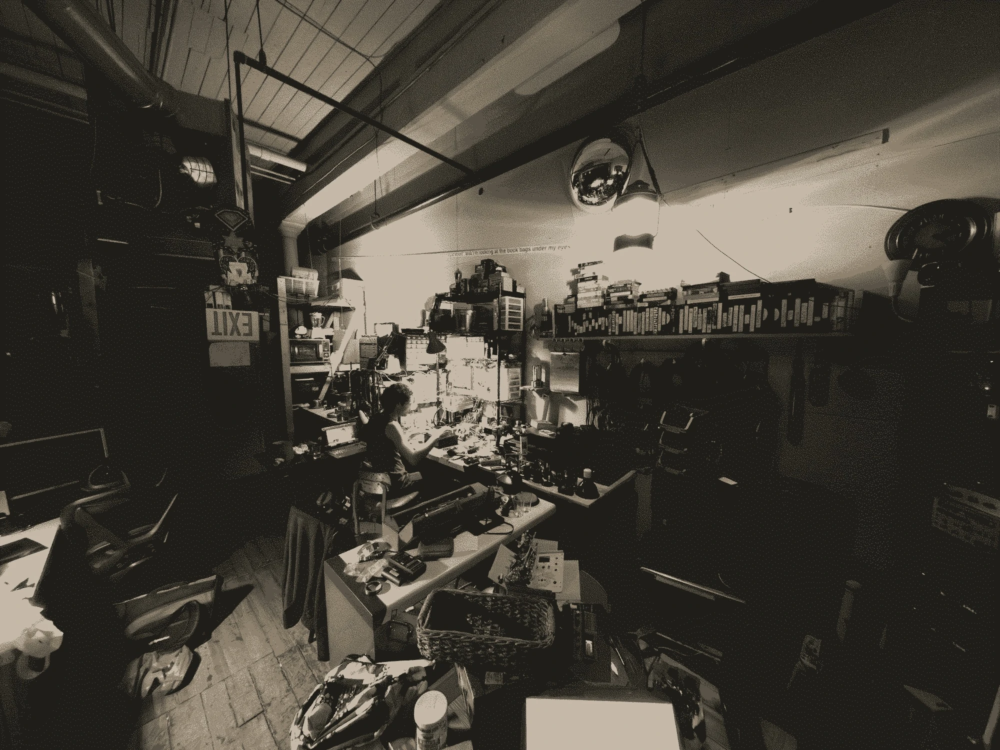
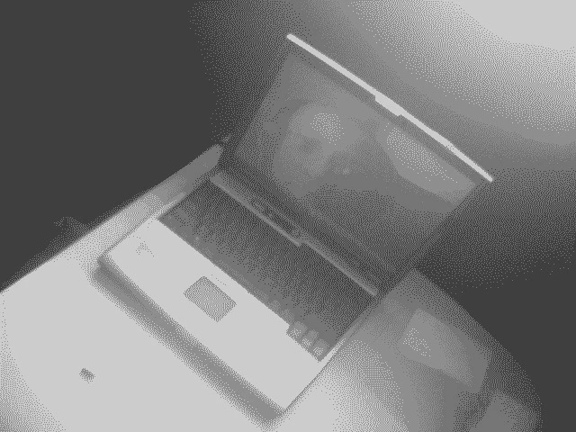

This site is hosted on Github and coded by hand with HTML, CSS, JS and BASH. The wiki is inspired by 100r and the XXIIVV wiki, which I have been following for many years. Some CSS and HTML styling elements are also inspired by Peter Blassers site, the Monome site, and my friend Enzo's server Funbox.sh. Shoutout to William Hazard for helping me setup this site, and to all my friends in providence and at cancelled.work for helping me with learning to code, especially Grief and Enzo. This site is meant to be pretty low level and run on most computers, however I prioritize image quality over anything else, so it might be slow loading images, trying to work on a separate low level theme or port, for smaller systems. There are also more css animations on my site than xxiivv.
Hello from my terminal! This is the internal hyper meta magic portal for the site.
2011
Dell Latitude D400 intel pentium with Windows 7. My first computer. These pics were taken in San Diego, CA in 2011.
Sun, 18 Aug 2024 14:06:45 -0400
how to use your funbox email
I have a longer, more rambling text on email theory so I'll keep this
intro short.
To set it up in any mail client, you need to tell it the "incoming
server" and "outgoing server".
This is the way it is because sending mail and receiving mail.
(including sorting, moving, marking as this and that, etc) are handled
seperately.
The incoming server uses IMAP (the Internet Message Access Protocol) to
interact with your mailbox. This is where you read new messages, sort
them into folders, mark them as read or unread or important or
unimportant, and all that. Your mailbox lives on the server, many
different devices can connect at once and you can get to your mail on
all of them.
IMAP settings for funbox:
server address: funbox.sh
protocol: IMAP
Port: 993
Security: SSL/TLS (required)
Authentication Method: PLAIN or LOGIN
Username: Your username. Not your whole email! Not [user@domain], just
[user]
Sending mail works completely differently. In the same way that you can
read physical mail, sort it, and write letters in the comfort of your
home, you have to go put your letter in a mailbox to actually send it.
The outgoing server uses SMTP (the Simple Mail Transport Protocol) to
receive mail from you. Then, it figures out what SMTP server the
message needs to be sent to, and sends it.
If email were still as simplistic as its bones, this is all we would
need. There would be no need for IMAP because your mail would be
delivered by SMTP directly to the computer you're on, and you'd use
some local program to read and manage your mail. But that way of doing
things only worked in the mainframe era. Once we started puttng
computers in our homes and moving around with them, getting a server to
connect directly to us to deliver mail beacame completely impractical
(not the least of which being that personal computers can't be on all
the time waiting for mail).
No, for this the mainframe had to stay. To get your mail (on any and
many devices) you need to have an incoming server that sits ready and
easily findable, waiting to receive your mail.
When yo're ready to check it, you then undestand the need for IMAP
because you now need to interact with your mailbox remotely.
So, now it should make sense why we need to confiure two servers for
any email account.
In many cases, including this one, the incoming and outgoing servers
are the same server. There's no reason why one server can't send your
mail out and also wait to receive mail for you. There's also no reason
why they they can't be different servers. In our case, they're the
same. We have one and only server.
SMTP settings for funbox:
Outgoing server: funbox.sh
Port: 587
Security: StartTLS
Authentication method: PLAIN
Username: Your username. JUST the [user] part, not the whole
[user@domain]
If you are an external domain:
The only thing you need to do is add an MX (Mail Exchagne) record to
your DNS zone.
it should be for your domain, and point to funbox.sh, and have a
priority number (1 is fine).
When somebody wants to send mail to you, and submits a message to their
outgoing SMTP server, that server will resove the MX record for your
domain to determine where to actually send the mail. Your MX record
identifies funbox.sh as the server handling your mail. Large operations
would return a list of servers (hence the priority field) but we only
have one.
The foreign SMTP server then sends the message to funbox's SMTP server,
which receives it, checks its list of virtual alias domains to make
sure the message belongs here, then delivers the message to your
mailbox. Ready for you to connect by IMAP and read it.
--
C. Enzo
Flex Plateau Research
"I come and go like a comet; we are wanderers"